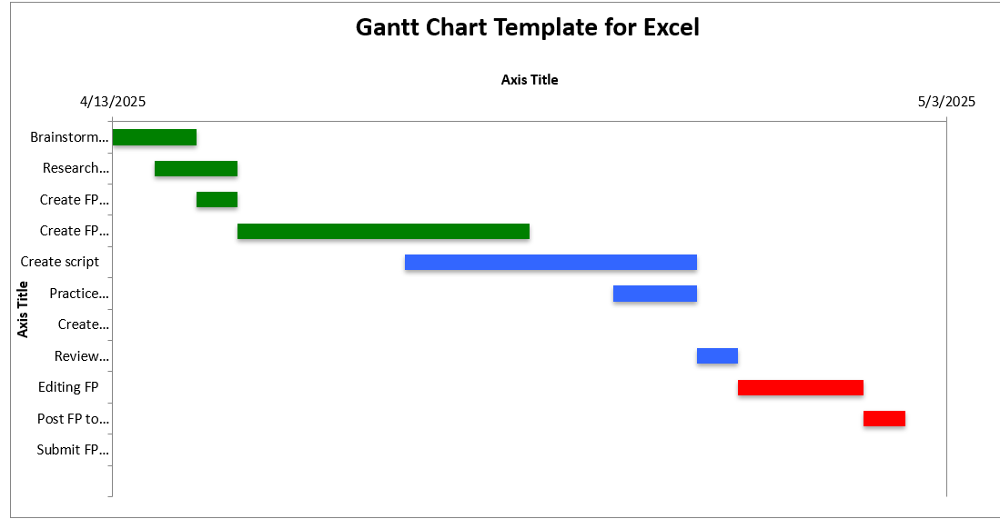

My final project presentation idea is to use slides and screen recordings of certain examples to make a video about graphics and multimedia. The slides will be utilized to cover the fundamentals of the topic, then the screen recordings will be used to show examples. One example I would like to show is how raster and vector graphics behave differently in image-editing software. The overall objective of the presentation is to clearly convey information about graphics and multimedia, specifically how to create or obtain them, save and work with them,and add them to web pages. If possible, I also would like to cover methods of communication through technology and webcasts.
